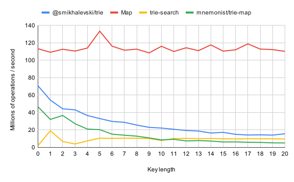
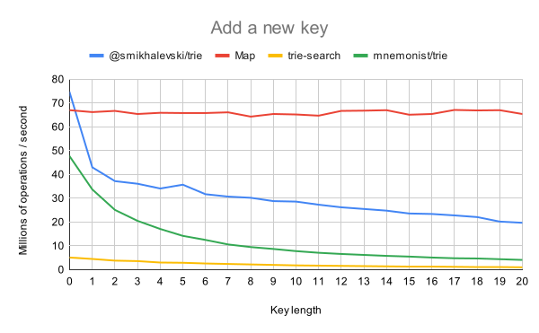
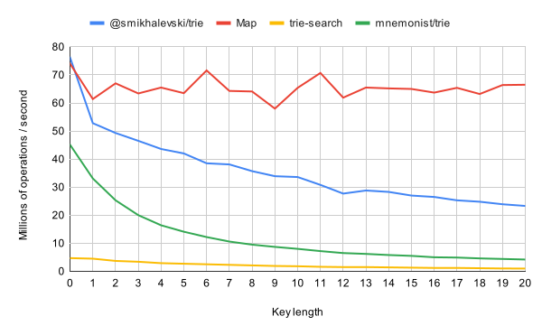

@smikhalevski/trie - v2.2.0
trie 🌲 
The extremely fast compressed trie implementation in 2 kB gzipped.
npm install --save-prod @smikhalevski/trie
Object-backed trie
Array-backed trie
Usage
🔎 API documentation is available here.
trieCreate()
Creates a blank Trie instance. Trie is a plain object
that you pass as an argument to various functions that traverse and update the data structure.
const trie = trieCreate();
// ⮕ { key: null, value: undefined, … }
trieSet(trie, key, value)
Associates the key with the value in the trie and returns the leaf trie object that withholds the key-value pair.
const trie = trieCreate();
trieSet(trie, 'foo', 111);
// ⮕ { key: 'foo', value: 111, … }
The returned leaf trie instance has stable identity: this object would represent the associated key up to the moment the key is deleted. So, if you set a new value for the key, or add/delete other keys in the trie, the returned leaf object would still correspond to the original key.
const leaf1 = trieSet(trie, 'foo', 111);
const leaf2 = trieSet(trie, 'foo', 222);
leaf1 === leaf2 // ⮕ true
trieGet(trie, key)
Returns a leaf associated with the key.
const trie = trieCreate();
trieSet(trie, 'foo', 111);
trieGet(trie, 'foo');
// ⮕ { key: 'foo', value: 111, … }
trieGet(trie, 'wow');
// ⮕ null
trieSearch(trie, input, startIndex?, endIndex?)
Searches for a key that matches the longest substring in input that starts at startIndex and ends at endIndex, and
returns the corresponding leaf.
const trie = trieCreate();
trieSet(trie, 'foo', 111);
trieSet(trie, 'foobar', 222);
trieSearch(trie, '___foobar___', 3);
// ⮕ { key: 'foobar', value: 222, length: 6, … }
trieSearch(trie, '___fooba___', 3);
// ⮕ { key: 'foo', value: 111, length: 3, … }
You can provide the endIndex to limit the searched key length:
trieSearch(trie, '___foobar___', 3, 7);
// ⮕ { key: 'foo', value: 111, length: 3, … }
trieSuggest(trie, input, startIndex?, endIndex?)
Returns the cached readonly array of trie leafs that have keys starting with input.substring(startIndex, endIndex).
const trie = trieCreate();
trieSet(trie, 'hotdog', 111);
trieSet(trie, 'hotter', 222);
trieSet(trie, 'hottest', 333);
trieSuggest(trie, 'hot');
// ⮕ [{ key: 'hotdog', … }, { key: 'hotter', … }, { key: 'hottest', … }]
trieSuggest(trie, 'hott');
// ⮕ [{ key: 'hotter', … }, { key: 'hottest', … }]
trieSuggest(trie, 'wow');
// ⮕ null
trieDelete(leaf)
Deletes the leaf trie from its parent.
const trie = trieCreate();
const leaf = trieSet(trie, 'foo', 111);
trieDelete(leaf);
Or you can combine it with trieGet:
trieDelete(trieGet(trie, 'foo'));
You can delete all values with a particular prefix:
trieSuggest(trie, 'foo')?.forEach(trieDelete);
arrayTrieEncode(trie)
Converts Trie into an
ArrayTrie.
Trie is comprised of multiple objects that represent branches and leafs. ArrayTrie withholds all the data from the
Trie instance in just 3 objects regardless the number of key-value pairs in the original Trie instance.
const trie = trieCreate();
trieSet(trie, 'foo', 111);
const arrayTrie = arrayTrieEncode(trie);
arrayTrieGet(arrayTrie, 'foo');
// ⮕ 111
ArrayTrie is backed by an array of indices instead of a tree of objects, it has a tiny memory footprint. It requires
400× less memory than the Trie instance with the same set of key-value pairs.
arrayTrieGet(arrayTrie, key)
Returns a value associated with the key.
const trie = trieCreate();
trieSet(trie, 'foo', 111);
trieSet(trie, 'bar', 222);
const arrayTrie = arrayTrieEncode(trie);
arrayTrieGet(arrayTrie, 'bar');
// ⮕ 222
arrayTrieGet(arrayTrie, 'wow');
// ⮕ null
arrayTrieSearch(arrayTrie, input, startIndex?, endIndex?)
Searches for a key that matches the longest substring in input that starts at startIndex and ends at endIndex, and
returns the corresponding value.
const trie = trieCreate();
trieSet(trie, 'foo', 111);
trieSet(trie, 'foobar', 222);
const arrayTrie = arrayTrieEncode(trie);
arrayTrieSearch(arrayTrie, '___foobar___', 3);
// ⮕ { value: 222, lastIndex: 9 }
arrayTrieSearch(arrayTrie, '___fooba___', 3);
// ⮕ { value: 111, lastIndex: 6 }
You can provide the endIndex to limit the searched key length:
arrayTrieSearch(arrayTrie, '___foobar___', 3, 7);
// ⮕ { value: 111, lastIndex: 6 }
Performance
Clone this repo and use npm ci && npm run perf to run the performance testsuite.
Search / Get

Add a new key

Update an existing key
